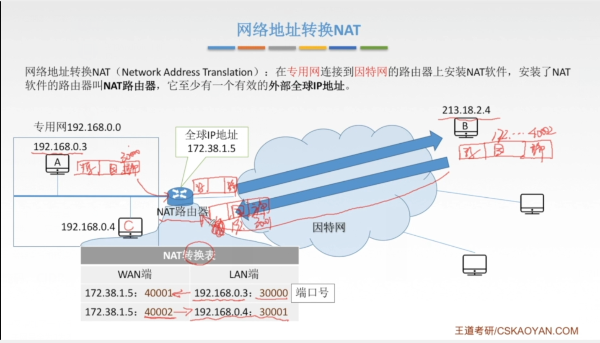
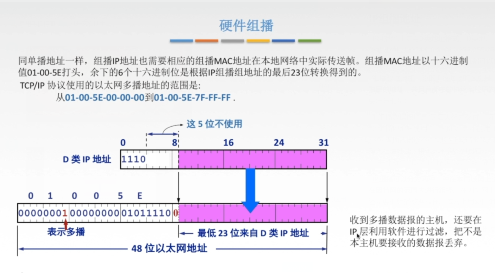

# 网络层功能
异构网络互联（数据链路层和物理层均不同）：物理层和数据链路层中继器只是扩大网络，不能网络互联
虚拟互联网络（也称为逻辑互联网络）是指互联起来的各种物理网络的异构性本来是客观存在的但是通过 IP 就可以使这些性能各异的网络在网络层上看起来好像是一个统一的网络。这种使用 IP 的虚拟互联网络可以简称为 IP 网络。
路由与转发：路由器连接的网络，网络层及以下可以不同，网络层以上必须相同
拥塞控制：开环控制（静态），闭环控制（动态）
# IPV4
IP 分组格式
版本：4 位，指 IP 版本，目前广泛使用的版本号是 4
首部长度：占 4 位。 基本单位为 4B, 最大值为 60B (154B) ，最常用的首部长度是 20B
总长度：占 16 位。 基本单位为 1B* 指首部与数据之和的长度最大长度 65535B.
标识：占 16 位。 是 个计数器用千保证数据报片能够正确组装称为原来的数据报
标志：占 3 位最低位 MF=l 代表分片 中间位 DF=0 代表可以分
片偏移：占 13 位基本单位为 8B 指出分片后，某片在 原分组中的相对位置。
首部校验和：占 16 位 IP 数据报的首部校验和只校验分组的首部，而不校验数据部分。
生存时间 TTL: 占 8 位保证分组不会在网络中循环每次路由转发 TTL-1 当 TTL 为 0 丢弃该分组。
协议：占 8 位 指出该分组使用的协议 (6 为 TCP 协议 17 为 U DP 协议）。
源地址字段：占 4B 标识发送发的 IP 地址。
目的地址字段：占 4B 标识接收方的 IP 地址。
# IP 数据报分片
最大传送单元（MTU）：一个链路层数据报所能承载在的最大数据量。以太网：1500B，广域网：一般不超过 576B.IP 数据报分片：当数据报长度大于链路 MTU 时，就要对其进行分片传输。分片会在目的地进行组装，不会在中间路由处进行组装。
标志位含义：MF (more fragment ) ：为 1 代表进行了分片。DF (don’t fragment)：为 0 时才可以进行分片。
# 网络层转发分组的流程
(1) 直接交付
（2）1 不成功，则间接交付
（3）2 不成功，找特定路由（通常为了控制和测试网络，如域名服务器）
（4）3 不成功，则交由默认路由（如互联网）
# IPV4 地址


# 网络地址转换（NAT）
普通路由器仅工作在网络层，NAT 路由器还要查看和转换传输层的端口号
只有管理员能添加 NAT 表，在 NET 找不到对应端口后就要抛弃分组

# 子网划分与子网掩码，CIDR
子网划分可平均划分，和变长划分
默认路由，路由聚合可用于路由器表项合并
子网不能全 0 和全 1，子网号全为 0 为本网络号，全为 1 为子网的广播地址
在使用子网掩码的情况下：
（1）一台主机设置 IP 地址的同时必须设置子网掩码。
（2）同属于一个子网的所有主机及路由器的相应端口，必须设置相同的子网掩码。
（3）路由表中必须包含有网络地址，子网掩码和下一跳地址。
CIDR 把小的网络汇聚成大的网络
构成超网
最长前缀匹配
# IP 地址与硬件地址
IP 地址是网络层使用的地址，它是分层次等级的。硬件地址是数据链路层使用的地址，它是平面式的。在网络层及网络层之上使用 IP 地址，IP 地址放在 IP 数据报的首部，而 MAC 地址放在 MAC 帧的首部，数据链路层看不见数据报分组中的 IP 地址。在网络层中的路由器相互传输时使用 IP 地址，当到达目标网络后，使用 MAC 地址查找目标物理主机。（路由器由于互联多个网络，因此他不仅有多个 IP 地址，也有多个 MAC 地址。）
# 地址解析协议（ARP）
地址解析协议（ARP）实现了 IP 地址到 MAC 地址的映射。每台主机都设有一个 ARP 高速缓存，用来存放本局域网上各主机和路由器的 IP 地址到 MAC 地址的映射表，称为 ARP 表。
ARP 表上没有找到物理地址，目的 MAC 地址就用 ff-ff-ff-ff
ARP 的 4 种典型情况总结如下：
（1）发送方是主机时，要把 IP 数据报发送到本网络上的另一台主机：这时用 ARP 找到目的主机的硬件地址
（2）发送方是主机时，要把 IP 数据报发送到另一个网络上的一台主机 这时用 ARP 找到本网络上的一个路由器的硬件地址，剩下的工作由这个路由器来完成。
（3）发送方是路由器时，要把 IP 数据报转发到本网络上的 — 台主机，这时用 ARP 找到目的主机的硬件地址
（4）发送方是路由器时，要把 IP 数据报转发到本网络上的 — 台主机：这时用 ARP 找到本网络上的一个路由器的硬件地址，剩下的工作由这个路由器来完成。
# 动态主机配置协议（DHCP）
DHCP 是应用层协议，它是基于 UDP 的。使用客户 / 服务器模式，通过广播方式交互
动态主机配置协议（DHCP）实现过程如下：
（1）DHCP 客户机广播 “DHCP 发现” 消息，试图找到网络中的 DHCP 服务器，以便从 DHCP 服务器中获得一个 IP 地址。
（2）DHCP 服务器收到 DHCP 发现 消息后，向网络中广播，DHCP 提供 “消息，其中包括提供 DHCP 客户机的 IP 地址和柜关配置信息。
（3）DHCP 客户机收到 DHCP 提供消息，如果接收 DHCP 服务器所提供的相关参数，那么通过广播 DHCP 请求消息向 DHCP 服务器请求提供 IP 地址。
（4）DHCP 服务器广播，DHCP 确认消息，将 IP 地址分配给 DHCP 客户机。
DHCP 服务器分配给 DHCP 客户的 IP 地址是临时的，因此 DHCP 客户只能在一段有限的时间内使用这个分配到的 IP 地址 DHCP 的客户端和服务器端需要通过广播方式来进行交互。
# 网际控制报文协议（ICMP）
ICMP 差错报告报文
终点不可达：当路由器或主机不能交付数据报时，就向源点发送终点不可达报文。
源点抑制：当路由器或主机由于拥塞而丢弃数据报时，就向源点发送源点抑制报文，使源点知道应当把数据报的发送速率放慢。
时间超过：当路由器收到生存时间 (TTL) 为零的数据报时，除丢弃该数据报外，还要向源点发送时间超过报文。
参数问题：当路由器或目的主机收到的数据报的首部中有的字段的值不正确时，就丢弃该数据报，并向源点发送参数问题报文。
改变路由（重定向）：路由器把改变路由报文发送给主机，让主机知道下次应将数据报发送给另外的路由器。
不应发送 ICMP 差错报告报文的情况有以下四种情况：
（1）对 ICMP 差错报告报文不再发送 ICMP 差错报告报文。
（2）对第 — 个分片的数据报片的所有后续数据报片都不发送 ICMP 差错报告报文。
（3）对具有组播地址的数据报都不发送 ICMP 差错报告报文。
（4）对具有特殊地址（如 127.0.0.0 或 0.0.0.0) 的数据报不发送 ICMP 差错报告报文。
ICMP 询问报文有 4 种类型：回送请求和回答报文、时间戳请求和回答报文、掩码地址请求和回答报文、路由器询问和通告报文。
ICMP 常见的两个应用是分组网间探测 PING 和 Traceroute.
分组网间探测 PING（工作在应用层）：使用了 ICMP 回送请求和回答报文，用来测试两台主机之间的连通性。
Traceroute（在网络层）：使用了 ICMP 时间超过报文，用来跟踪分组经过的路由。
# IPV6
（1）更大的地址空间 IPv6 将地址从 IPv4 的 32 位增大到了 128 位。
（2）扩展的地址层次结构。
（3）扩展首部
（4）改进的选项。
（5）允许协议继续扩充。
（6）支持即插即用（即自动配置）。
（7）支持资源的预分配。
（8）IPv6 只有在包的源结点才能分片，是端到端的，传输路径中的路由器不能分片。
（9）IPv6 首部长度必须是 8B 的整数倍，而 IPv4 首部是 4B 的整数倍。
（10）增大了安全性。 身份验证和保密功能是 IPv6 的关键特征。
IPV6 地址缩写：当 16 位域的开头由一些 0 时，可以采用一种缩写表示法，但在域中必须至少有一个数字。当有相继的 0 值域时，还可以进一部缩写，将这些域可以用双冒号进行缩写（::）.
IPV6 数据报的目的地址可以是以下三种基本类型地址之一：
（1）单播。单播就是传统的点对点通信。
（2）多播。多播是一点对多点的通信，分组被交付到一组计算机的每台计算机。
（3）任播。这是 IPV6 新增加的一种类型。任播的目的站是一组计算机，但数据报在交付时只交付其中的一台计算机，通常是距离最近的一台计算机。
IPV4 向 IPV6 过渡可以采用双协议栈和隧道技术两种策略。
双协议栈：双协议栈技术是指在一台设备上同时装有 IPV4 和 IPV6 协议栈，那么这台设备既能和 IPV4 网络通信，又能和 IPV6 网络通信。
隧道技术：将整个 IPv6 数据报封装到 IPv4 数据报的数据部分，使得 IPv6 数据报可以在 IPv4 网络的隧道中传输。
# 路由协议
自治系统（AS）：单一技术管理下的一组路由器，这些路由器使用一种 AS 内部的路由选择协议和共同度量来确定分组在该 AS 内的路由。同时还使用一种 AS 之间的路由选择协议来确定分组在 AS 之间的路由。
内部网关协议(IGP，域内路由选择，AS内）:在一个自治系统内部使用的路由选择协议，目前这类路由选择协议使用得最多，如RIP和OSPF.
外部网关协议(EGP，域间路由选择，AS外）:源站和目的站处在不同的自治系统中，当数据报传到一个自治系统的边界时需要使用一种协议将路由选择信息传递到另一个自治系统中。目前使用最多的外部网关协议是BGP-4.
# 路由信息协议（RIP）（应用层）
路由信息协议（RIP）：内部网关协议 (IGP) 中最先得到广泛应用的协议。RIP 是一种分布式的，基于距离向量的路由选择协议，其最大的优点就是简单。
RIP 的规定：
1. 网络中的每个路由器都要维护从他自身到其他每个目的网络的距离记录。
2. 距离也称跳数，规定从一个路由器到直接连接网络的距离（跳数）为 1。
3.RIP 认为好的路由就是它通过的路由器的数目少，即优先选择跳数小的路径。
4.RIP 允许一条路径最多只能包含 15 个路由器，因此距离等于 16 时，它表示网络不可达。
5.RIP 默认在任意两个使用 RIP 的路由器每 30 秒广播 — 次 RIP 路由更新信息，以便自动建立并维护路由表，超过 180 秒没收到更新，则直接更新。
6. 在 RIP 中不支持子网掩码的 RIP 广播，所以 RIP 中每个网络的子网掩码必须相同。
RIP 的特点：
（1）实现简单，开销小，收敛过程快。
（2）网络规模小，16
（3）坏消息传的慢
RIP 是应用层协议，他使用 UDP 传送数据（端口 520）。RIP 选择的路径不一定是时间最短的，但一定是具有最少路由器的路径。
# 距离向量算法
关键点：1. 原来路由表有目的地址 N，且下一跳路由器地址是 X，则替换（不管变大变小，都以实时为准 c）
2. 只有收到的距离小于原来的距离才替换，等于不替换
# 放最短路径优先协议（OSPF）（网络层）
使用分布式链路状态路由算法
OSPF 的特点
（1）OSPF 对不同的链路可根据 IP 分组的不同服务类型 (TOS) 而设置成不同的代价。
（2）OSPF 对于不同类型的业务可计算出不同的路由，十分灵活。
（3）多路径间负载平衡：如果到同 — 个目的网络有多条相同代价的路径，那么可以将通信量分配给这几条路径。
（4）所有在 OSPF 路由器之间交换的分组都具有鉴别功能，因而保证了仅在可信赖的路由器之间交换链路状态信息。
（5）支持可变长度的子网划分和无分类编址 CIDR。
（6）每个链路状态都带上 — 个 32 位的序号，序号越大，状态就越新。
（7）每隔一段时间刷新数据库中的链路状态
.OSPF 的五种分组类型
（HELLO）问候分组：用来发现和维持邻站的可达性。
数据库描述分组：向邻站给出自己的链路状态数据库中的所有链路状态项目的摘要信息。
链路状态请求分组：向对方请求发送某些链路状态项目的详细信息。
链路状态更新分组：用洪泛法对全网更新链路状态。
链路状态确认分组：对链路更新分组的确认。
# 边界网关协议（BGP）
** 边界网关协议（BGP）** 是不同自治系统的路由器之间交换路由信息的协议，是 — 种外部网关协议边界网关协议常用于互联网的网关之间，BGP 采用的是路径向量路由选择协议，它是一个应用层协议，基于 TCP。
打开 (Open) 报文：用来与相邻的另 — 个 BGP 发言人建立关系。
更新 (Update) 报文：用来发送某一路由的信息，以及列出要撤销的多条路由。
保活 (Keepalive) 报文：用来确认打开报文并周期性地证实邻站关系。
通知 (Notification) 报文：用来发送检测到的差错。

# 路由算法
静态路由算法：由网络管理员手工配置的路由信息。对于简单的小型网络可以采用静态路由。
动态路由算法：改善网络的性能并有助于流量控制，但是算法过于复杂，会增加网络的负担，对动态变化的反应太快而引起振荡，或反应太慢而影晌网络路由的一致性。
# IP 组播（屁都没讲清楚，真的笑了）
组播机制是让源计算机一次发送的单个分组可以抵达用一个组地址标识的若干目标主机，并被他们正确接收。组播仅应用于 UDP。组播需要路由器的支持才能实现，能够运行组播协议的路由器称为组播路由器。
播实现过程：主机使用一个称为 IGMP 的协议加入组播组，使用该协议通知本地网络上的路由器关于要接收发送给某个组播组的分组的愿望，通过扩展路由器的路由选择和转发功能，可以在许多路由器互联的支持硬件组播的网络上面实现因特网组播。组播技术使得数据只需发送一次就可发送到所有接收者，大大减轻了网络的负载和发送者的负担。

# IP 组播地址
IP 组播地址使用 D 类地址格式，D 类地址的前四位是 1110，因此 D 类地址范围是 224.0.0.0~239.255.255.255，每个 D 类 IP 地址标志一个组播组。并不是所有 D 类地址都可以用，有些用于永久组播
组播数据报和一般的 IP 数据报的区别是，前者使用 D 类 IP 地址作为目的地址，并且首部中的协议字段值为 2，表明使用 IGMP。需要注意的是：
1. 组播数据报也是 “尽最大努力交付”，不提供可靠交付。
2. 组播地址只能用于目的地址，不能用于源地址。
3. 对组播数据报不产生 ICMP 差错报文，因此若在 PING 命令后面键入组播地址，将永远不会收到回应。
4. 并非所有的 D 类地址都可以用作组播地址。
IP 组播可以分为两种一种在本局域网上进行硬件组播，另一种则在因特网的范围内进行组播。在因特网上进行组播的最后阶段，还是要把组播数据报在局域网上用硬件组播交付给组播组内的所有成员。

后 23 位进行映射硬件地址的映射关系不是唯一的，因此收到组播数据报的主机，还要在 IP 层利用软件进行过滤，把不是本主机要接收的数据报丢弃。
# IGMP 与组播路由算法
IGMP 为 TCP/IP 协议栈的一部分其工作可以分为两个阶段：
第一个阶段：主机加入新的组播组时，该主机向组播组的组播地址发送一个 IGMP 报文，声明要成为该组的成员。本地的组播路由器收到 IGMP 报文后，将组成员关系转发给因特网上的其他组播路由器。
第二个阶段：本地组播路由器周期性地探询本地局域网上的主机，以便知道这些主机是否仍继续是组的成员。只要对某个组有一台主机响应，那么组播路由器就认为这个组是活跃的。一个组在经过几次的探询后仍然没有一台主机响应时，则不再将该组的成 员关系转发给其他的组播路由器。
实现因特网组播的路由算法：第一种是基于链路状态的路由选择，第二种是基于距离 - 向量的路由选择，第三种可以建立在任何路由器协议之上，因此成为协议无关的组播（PIM）。
为了避免环路，构建组播转发树
# 移动 IP
基于 IPV4 定义的三种功能实体：移动节点、本地代理和外部代理。
移动结点 ：具有永久 IP 地址的移动结点。
本地代理：在 — 个网络环境中，— 个移动结点的永久 “居所” 被称为归属网络，在归属网络中代表移动结点执行移动管理功能的实体称为归属。
外部代理：在外部网络中帮助移动结点完成移动管理功能的实体称为外部代理。
# 移动 IP 通信过程
1. 移动结点在本地网时，按传统的 TCP/IP 方式进行通信（在本地网中有固有的地址 ）。
2. 移动结点到一个外地网络时，移动结点向本地代理注册当前的位置地址，即转交地址。
3. 本地代理接收来自转交地址的注册后，会构建一条通向转交地址的隧道，本地地址会将截获的信息通过隧道发送给转交地址处
4. 在转交地址处解除隧道封装，恢复成原来 IP 分组，最后送到移动结点。
5. 移动结点在外网通过外网的路由器或外部代理向通信对端发送 IP 数据包。
6. 移动结点来到另 — 个外网时，只需向本地代理更新注册的转交地址，就可继续通信。
7. 移动结点回到本地网时，移动结点向本地代理注销转交地址，这时移动结点又将使用传统的 TCP/IP 方式进行通信。
# 网络层设备
# 路由器工作过程
当源主机和目标主机在同一个网络上时，直接交付无需经过路由器。
源主机和目标主机不在同一个网络上时，路由器按照转发表将数据报转发给下一个路由器，即间接交付。
# 路由器功能组成
从结构上看，路由器由路由选择部分和分组转发部分组成。
路由选择部分也称控制部分，其核心构件是路由选择处理机。路由选择处理机的任务是：根据选定的路由选择协议构造出路由表和其他相邻路由器交换路由信息然后更新和维护路由表。
分组转发部分由三部分组成：交换结构、一组输入端口和一组输出端口。输入端口从物理层接收到的比特流中提取出链路层帧，进而从帧中提取出网络层数据报。输出端口则将数据报变为比特流发送到物理层。交换结构是路由器的关键部件，它根据转发表对分组进行处理，将从输入口进入的分组从一个合适的输出端口转发出去。有三种常用的交换方法：通过存储器进行交换、通过总线进行交换和通过互联网络进行交换。
路由器主要完成两个功能：一是分组转发，二是路由计算。
# 路由器与网桥的 区别
路由器与网桥的重要区别是：网桥与高层协议无关，路由器是面向协议的，依据网络地址进行操作，并进行路径选择、分段帧格式转换、对数据报的生存时间和流量进行控制等。
# 路由表与路由转发
路由表（软件）是根据路由选择算法得出的，主要用途是路由选择。标准的路由表有 4 个部分：目的网络的 IP 地址、子网掩码、下一跳 IP 地址和接口。
转发与路由选择的区别：转发（硬件或软件）指路由器根据转发表把收到的 IP 数据报从合适的端口转发出去，仅涉及一个路由器。而路由选择涉及很多路由器，路由表是许多路由器协同工作的结果。